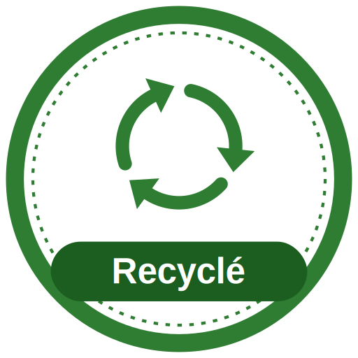
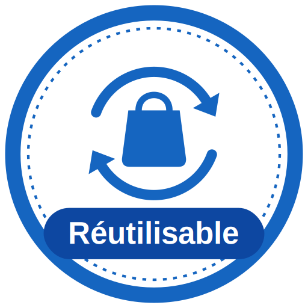

Local
Nous privilégions les entreprises, artisans et filières situés en Côte d’Ivoire afin de soutenir l’économie locale.
Production ivoirienneConsommer autrement pour préserver notre environnement
NOTRE DÉMARCHE
Chaque référence est étudiée selon sa provenance, ses matériaux, son usage et sa capacité à prolonger le cycle de vie des ressources.
Nous privilégions les entreprises, artisans et filières situés en Côte d’Ivoire afin de soutenir l’économie locale.
Production ivoirienne
Nous valorisons les matières récupérées pour limiter l’extraction de nouvelles ressources et réduire les déchets.
Matières valorisées
Nous sélectionnons des solutions durables, conçues pour remplacer les articles jetables et être utilisées plus longtemps.
Usage prolongéTRANSPARENCE
Notre méthode repose sur une lecture simple du cycle de vie du produit. Avant de le présenter dans le catalogue, nous vérifions les informations disponibles auprès du fournisseur et les classons selon quatre étapes.
Choisir un produit responsable, c’est soutenir les filières locales et donner une seconde vie aux ressources.
Voir le catalogue